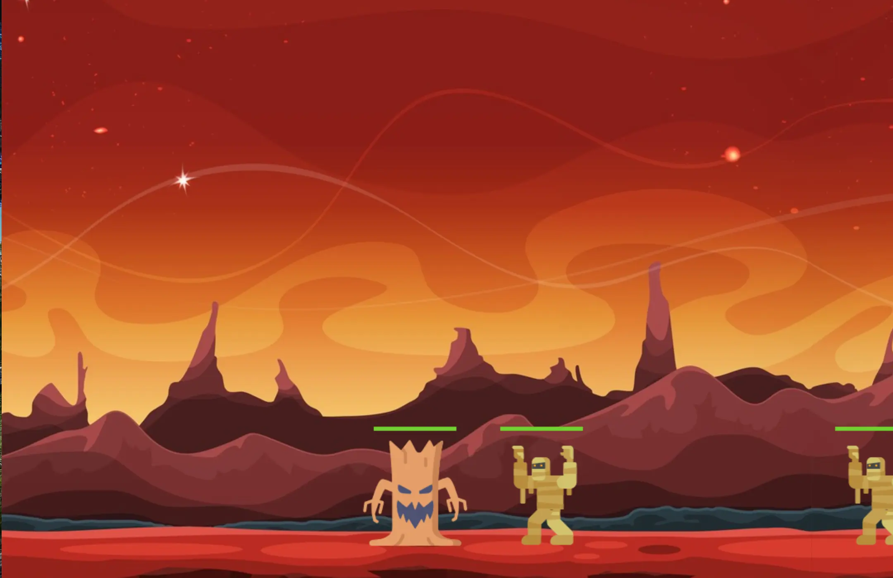

Création d'un jeu en python
- POK
- 2022-2023
- temps 3
- Ossama Abdane
L'objectif de mon POK est de découvrir comment créer un jeu en python en suivant un tutoriel de 10 vidéos youtube disponible sur ce lien : https://www.youtube.com/watch?v=8J8wWxbAdFg
Découpage en sprint
Sprint 1
- Trouver un tutoriel
- Installer pygame
- Création de la fenêtre du jeu
- Création du personnage principal
- Déplacement du personnage
- Configuration des projectiles
- Ajout des ennemis
- Configuration des barres de santé et la gestion des dégâts
Résultat du premier sprint :

Sprint 2
- Configuration de l'écran d'accueil
- Configuration de projectiles aériens
- Animation des personnages
- Ajout de personnages supplémentaires
- Ajout d'effets sonores
Résultat obtenu
Vous pouvez retrouver le code du jeu sur le lien suivant : https://github.com/ossamaabdane/Jeu-python Je déconseille aux gens souhaitant effectuer ce POK de prendre directement le code final mais plutôt suivre tout le tutoriel étape par étape pour bien comprendre le cheminement qui mène à la création du jeu.
Points positifs
- Le tutoriel est très complet et couvre toutes les étapes nécessaires pour créer un jeu en Python, de la création de la fenêtre de jeu à la gestion des événements.
- Il est présenté de manière claire et détaillée, avec des exemples pratiques et des explications théoriques pour aider à comprendre les concepts.
- Il est conçu pour les débutants en programmation, ce qui le rend accessible à un large public.
- Les vidéos de formation sont accompagnées de fichiers de travail pratiques, ce qui permet de suivre le cours et de pratiquer.
- Il est disponible gratuitement sur YouTube, ce qui le rend accessible à tous.
Points négatifs
- Le tutoriel est assez long.
- Le tutoriel se concentre sur la création d'un seul jeu en particulier, ce qui bloque les possibilités de personnalisation.
Conclusion
le tutoriel de Graven est une excellente ressource pour les débutants en programmation qui souhaitent apprendre à créer des jeux en utilisant Python. Les 10 vidéos sont claires, concises et détaillées, couvrant tous les aspects de la création de jeux, de la fenêtre de jeu aux graphismes, en passant par les événements et les sons. Le tutoriel est également très accessible, car il est présenté de manière progressive et contient des exemples pratiques pour aider à appliquer les concepts de programmation de manière efficace. Il s'agit d'un excellent point de départ pour les personnes qui souhaitent apprendre la programmation de jeux en Python, et qui cherchent à acquérir les compétences nécessaires pour créer des jeux simples mais fonctionnels.